초대 생성 /invite
v2 신규 유지 추천. 공유 전 미리보기와 카카오·링크 CTA가 한 화면에 있습니다.
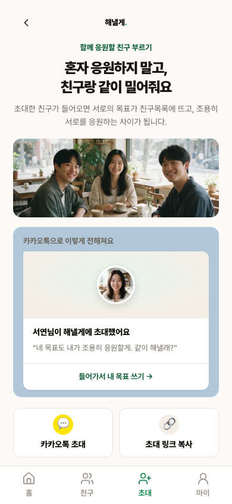
좌: tag v1.2.1, 우: 현재 main v2.0.0. 동일 로컬 Supabase fixture, Chromium, 390×844 CSS viewport, 1× 배율입니다.
/첫 방문자가 제품을 이해하고 목표 생성을 시작하는 화면


차이: v1은 실제 응원 단어를 첫 화면의 사회적 증거로 보여줍니다. v2는 큰 프리뷰 영역과 하단탭을 추가했지만 현재 프리뷰가 비어 보이고 주 CTA보다 면적을 더 차지합니다.
추천: 절충안. v1의 실제 응원 워드맵과 짧은 전환 흐름을 되살리고, v2의 카카오 로그인 표기와 4탭 IA는 남깁니다. 프리뷰가 실제 데이터가 없을 때는 큰 빈 카드 대신 v1 크기의 예시 워드맵을 보여줍니다.
/g/[slug]친구가 목표를 이해하고 응원 결제로 전환하는 화면
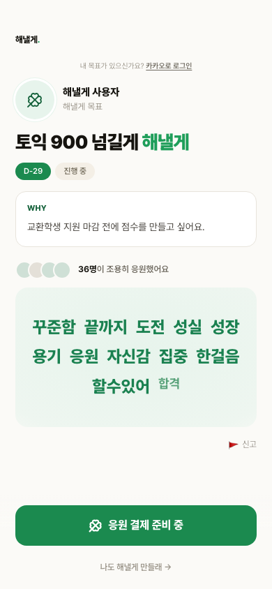
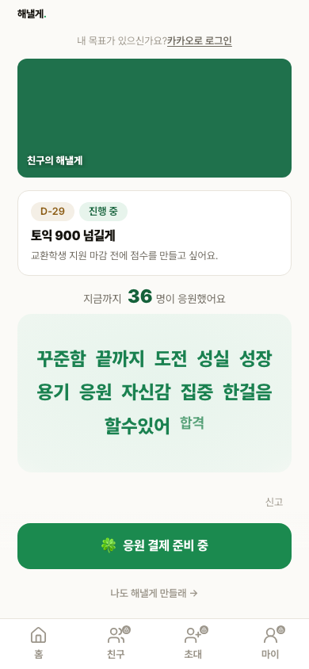
차이: v1은 주인공 프로필, 목표, WHY, 응원 수, 워드맵, 결제 CTA 순서로 설득합니다. v2는 cover를 크게 올리고 목표 카드를 압축했지만 주인공 신뢰와 WHY가 첫 화면에서 사라졌고 하단탭이 결제 CTA와 경쟁합니다.
추천: 절충안, v1 우세. v1의 프로필·WHY·실제 응원 증거와 결제 집중 구조를 되살립니다. v2의 cover는 커스텀 사진이 있을 때만 보조 증거로 사용하고, 프리셋 단색 cover와 공개 화면 하단탭은 제거합니다.
/me목표 주인공이 응원·잔액·링크를 관리하는 기존 홈
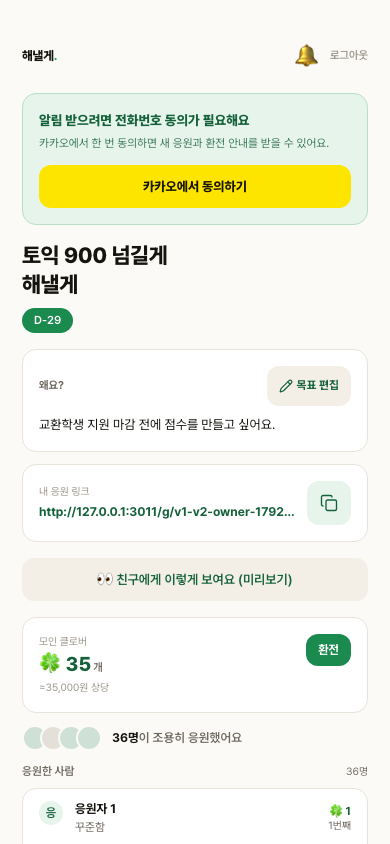
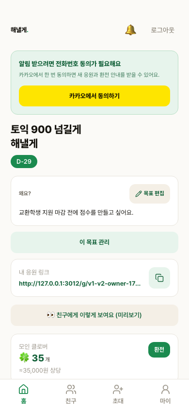
차이: v1은 첫 화면 아래에 응원자 목록까지 보여 관리 정보량이 높습니다. v2는 목표 관리 진입과 하단탭을 추가해 IA는 명확하지만 실제 응원 목록이 접힘 아래로 밀립니다.
추천: 절충안. v2의 4탭 IA와 목표 관리 진입은 남기되, 중복되는 관리 배너 높이를 줄여 v1처럼 최근 응원 1건 이상이 844px 안에 보이게 합니다.
/cashout금액을 검토하고 환전 신청을 진행하는 거래 화면
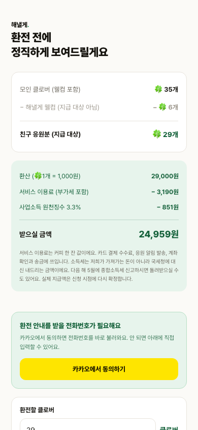
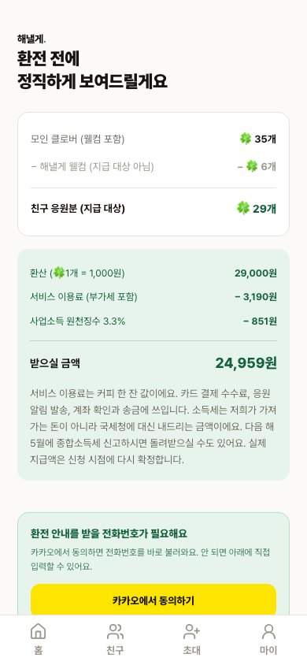
차이: 계산과 안내 내용은 같습니다. v2 하단탭이 거래 화면의 세로 공간을 차지해 전화번호 동의 CTA와 입력 폼을 더 아래로 밀고, 환전이라는 단일 과업과 경쟁합니다.
추천: v1 유지. 환전에서는 하단탭을 숨기고 금액·공제·본인확인·신청만 남깁니다. Baymard의 거래 단계 원칙처럼 주변 탐색보다 다음 행동을 또렷하게 만드는 편이 유리합니다.
/wordmap/[goalId]응원 결과를 저장하고 공유하는 자산 화면
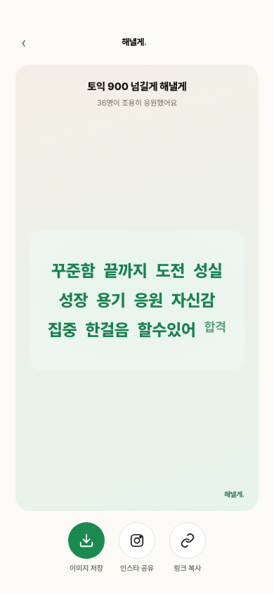
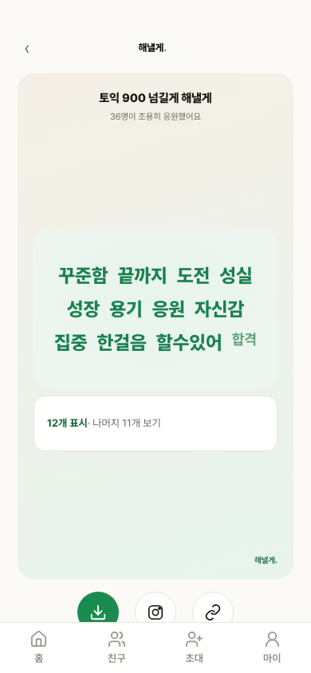
차이: v1은 목표명, 응원자 수, 워드맵, 이미지 저장·인스타 공유·링크 복사를 한 화면에 묶습니다. v2는 워드맵을 크게 보이게 하지만 맥락과 공유 CTA가 첫 화면 밖으로 밀리고 하단탭이 자산 화면을 침범합니다.
추천: v1 유지. 공유 자산은 무엇인지와 어떻게 퍼뜨리는지가 함께 보여야 합니다. v1 구조를 유지하고, 단어가 12개를 넘을 때만 v2의 펼침 계약을 보조로 붙입니다.
아래 5화면은 v1.2.1에 대응 라우트가 없어 기존 대체 여부가 아니라 신규 기능의 유지·개선 대상으로 분리했습니다.
/invitev2 신규 유지 추천. 공유 전 미리보기와 카카오·링크 CTA가 한 화면에 있습니다.

/invite/[token]v2 신규 유지 추천. 로그인 전 초대자·목표·수락 행동이 한 흐름입니다.
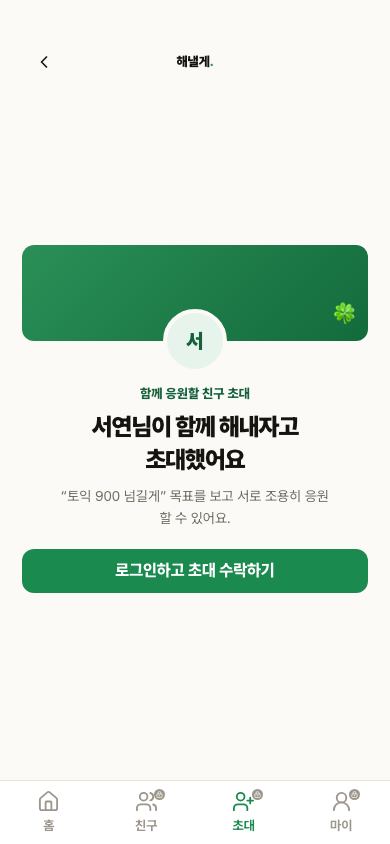
/friendsv2 신규 유지 추천. 관계 상태와 대표 목표가 한 행에서 스캔됩니다.
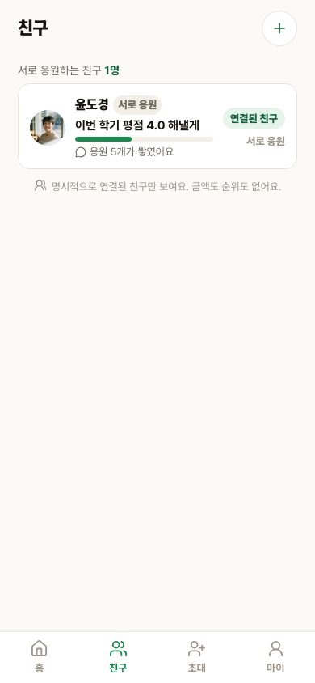
/friends/[friendId]v2 신규 유지 추천. 목표와 응원 맥락을 연결하되 다음 라운드에서 사진·근황의 실제성 검증이 필요합니다.
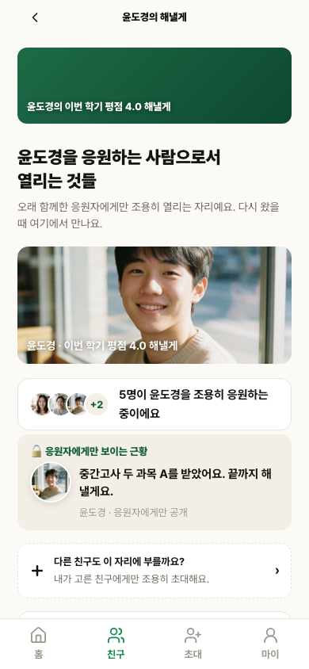
/me/achievementsv2 신규 유지 추천. 금액·순위 없이 DB에서 검증 가능한 세 지표만 보여줍니다.
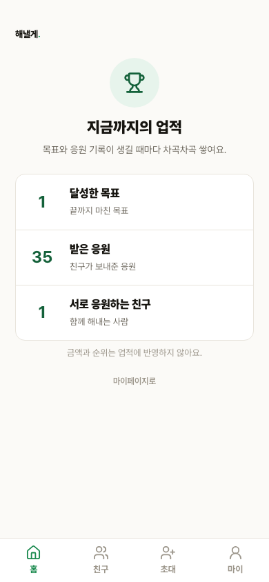
기본 선택은 추천안입니다. 바꾼 뒤 복사하면 화면별 선택을 한 번에 전달할 수 있습니다.